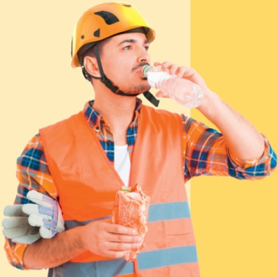

Bei der Arbeit am Bau wird viel geschwitzt. Trinken ist also ganz wichtig. Der Körper verliert täglich zirka 2,5 Liter Wasser. Ein Teil kann durch die Nahrung ausgeglichen werden, aber ca. 1,5 bis 2 Liter sollte man trinken. Gesunde Durstlöscher sind Mineralwasser sowie ungesüßte Früchte- und Kräutertees.
Wasser ist das beste Getränk!
